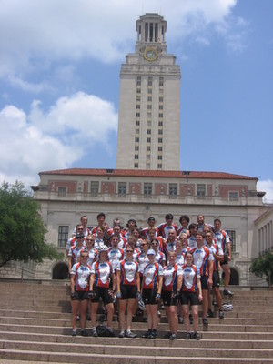
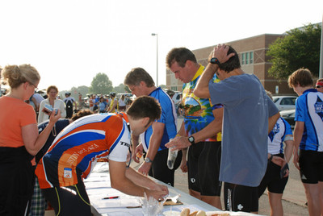
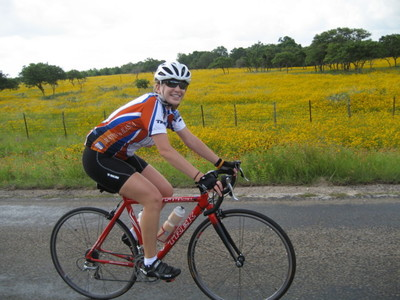
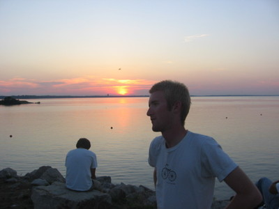
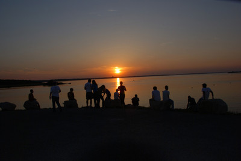
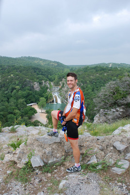

I have to admit that after a teary goodbye from my girlfriend, two days of madly dashing around town wrapping up errands and moving out of my house and getting no sleep, I wasn't in the best mental place to start this trip. I almost fell asleep on the bus down to the bike shop to pick up my freshly tuned bike from my favorite mechanics Sol & Eric at austin bikes. I arrived at the tower about 10 minutes late and was kicking myself for not being better prepared--I rode up with a carton of stuff balanced on my aerobars that I hastily shoved into the van in blatant disregard of the "your gear MUST fit in a duffel bag 2 feet x 1 foot x 1 foot in size OR ELSE" rule, and joined my teammates on the steps of the UT Tower.
There were easily a hundred folks there between the 40 riders and their family, friends, and a surprising amount of press (mostly the Daily Texan [which printed this article with some pictures that I can't find], but the San Antonio Express had an article up [which one cannot now read without paying] already as of this writing as well.) There was a lot of excitement crashing against the rocks of hurry up and wait...as we sat around til 2pm for the announced-to-the-press departure. There were a few photo ops, none of which were taken with my camera so you'll have to wait to see what there is to see on that front!
2pm arrives, we line up, ride out, down south around the capitol building and then back through campus on the way out of town. Eric chose us a slightly viciously hilly route, but we did get to see some of the more scenic bits of Austin on the way to Cedar Park and I took the first half slow, bringing up the rear and riding easy. On local-racecar-favorite spicewood springs (down which I used to drive entirely too fast to safely account for possible cyclists...I was pretty naughty back then) I picked up the pace and played cat-and-mouse with Jordan who is totally capable of outrunning me at any time...I guess he was taking it easy =)
22 miles later we arrive at Cedar Park high school and I immediately fall asleep on the cold floor inside as we await the arrival of the rest of the team, the vans containing gear and food, and are inundated by hundreds of pink frilly young girls--we'd apparently wandered into a dance recital dress rehearsal and photo op. Too many photo ops for one day, in this prefers-to-be-behind-the-lense fella's opinion.
The roads were good, the temperature was hot, and while we had a minor tragedy in the form of a rider who's taking a time out to consult with her doctor before continuing, we got a good start and were even treated to pizza while we did some computer prep-work for tomorrow's atlas ride and now we'll head off for some inspirational speaking from one of our favorite researchers at the MD anderson cancer center and then a few hours of shuteye (finally!) before our first 70-mile day. At least we get to start this one before the heat of summer really started to get too crazy!
After a too-short sleep on the floor of a highschool, the wakeup shakeup came far too early. I was the second to last person to get packed as my bag was stuffed to bursting, yet I somehow still managed to be one of the first ready to ride and so volunteered to man the registration table, which was fortunate since I'd had email contact with about half of the registrants for our supported-and-open-to-the-public atlas ride. I handled registration until I almost missed the beginning of ride [a foreshadowing of things to come--the team was pretty bad at letting people who didn't happen to be sitting in the middle of the action know when things were happening. This didn't turn out to hurt me very often, but people were frequently left out of activities accidentally over the course of the trip]. We started with a pre-ride dedication as we'll do every day--this time to a cycling coach who trained many folks on the team while I was off skiing in Colorado this spring. 
I saw my friend Jason pull up in his car just as we left, so I rode slow and ended up riding for 10 miles or so with the father of a 2006 rider, Megan. We cruised and traded knee surgery and broken bone battle stories. I got caught up by Jason at first rest stop and rode with him til number two, past a huge field of yellow flowers. We later see fields of red and purple but I'm not feeling photographic---a trend that I at first felt the need to overcome, but gave up on by the end of the second week. Fortunately many of my teammates are taking tons of great pictures =)
I coasted with Katy out of rest stop 2 for a while before my legs wanted stretching and urged me on ever faster. Out of rest stop 3, I journeyed with Peyton down a long, long lonely stretch of road to rest stop 4, and decide to hammer the last bit and maintain an avg speed of easily 22mph for that leg--lots of downhill! That leg ends the ride, and we have some great barbecue, all you can eat sausage, a cold beer, and good friends. I don't know if it's because I didn't speed or just because the road hasn't been very unkind in terms of hills and total miles, but I'm not as exhausted as I expected after 2 days of riding. 
Unfortunately I got to drive back to Austin yet again tonight to return the tables and chairs from the banquet, as well as the extra rental vans. However, I did get in some fortuitous gear-gathering (the team storage unit happens to be at the same place mine is, so I can stop off to grab some stuff) and ran a few team errands before leaving town somewhat ignobly for a second time via car! I never figured the last two glimpses of austin I'd get would be from behind the wheel of the team van, but that's how it worked out. At this point, I'm still feeling fine physically, and mentally too .. but we haven't done more riding yet than I'd done during training in Austin, either. Upon return, everyone's asleep, so I strip down and take a brief very chilly hose-shower and wedge my sleeping bag into a tiny space under the canopy by the stage where the team has decided to sleep. don't have to pitch tents when there's a roof! I fall asleep nearly instantly. Odometer reading from the past couple of days: just 93mi.
Since I got back into Lampasas from Austin super-late, so my sleep was deep, untroubled, and far too short. Still, we were awoken in grand style by Zeke gently singing to us, and so we got up, still too new to all of this to beg for 10 more minutes of sleep or feel the lead in our legs slowing us down. We started getting ready before the sun rose. Several members of the 2006 team sent us off in style with a fancy breakfast, words of advice, and some awards for the top fundraisers...which included me. Thanks largely to the kindness of Mom and Dad but also with great thanks to my many friends and family who've donated, I was, as of 2 June ([and as of 12 Sept, still]), the top fundraiser on the team! And I still have a pile of fundraising letters to send out whose first copies (stamped and personal notes included) got lost in an office move-out tragedy. Sigh.
Anyhow, on the first day out into the wilds alone, we followed some '06 advice and set up a sweeper to bring up the rear and make sure that nobody had to ride alone at the back of the group, and that minor mishaps in the back were not turned into major ones--if someone couldn't manage to change a tire or got hurt, there'd be someone else along to help or call for help, at least. Collin tapped me for this duty which was an honor--he needed a strong rider who could keep up with whatever pace there was and whom he could trust to deal with problems. It was however disconcerting as well, because my style of riding on practically every ride I take is "ride as hard as you can for as long as you can and then do it some more" which, in our group, is definitely not compatible with bringing up the rear.
We had a fairly tearful dedication, since we knew the group would be splitting apart in a few minutes, and there was a lot of hugging, handshaking, and promises to keep in touch. I knew we'd see eachother on day 60 and I had no idea how far away that really felt, since I had yet to really grasp the routine of the trip--each day was as long as it was hard. We split up almost immediately, before we left the tiny town, and we shouted at eachother in frantic final goodbyes.
I took a reasonably paced start and stayed with the back group; I thought it might be slightly painful, but instead, it was wonderful! I saw the sights, I enjoyed the parallax scrolling effect that is so hypnotic and peaceful to me for whatever reason. A lot of the day was spent with Usman and Alex both of whom were feeling a little under the weather. It was a lot of hurry up and wait..and a lot of getting to know my teammates better.
Today we had some pleasant foreshadowing as the fire department in a tiny texas town was giving out free water and food (sausage wraps and cold water, mmm). Since I was bringing up the rear anyway, I stopped and so did the kids who were with me at that point.
Alex was hurting a lot and it finally came out that he'd done some major adjustments to his bike positioning on his own and that the remedy would probably be a professional fitting. He finally decided to play it safe rather than sorry and we called the van back to pick him up instead of aggravating some really really sore legs. I caught up to Usman pretty quickly, and he was in mortal need of a bathroom--it hurt to ride, it hurt to stop, what to do? I encouraged him onwards--remember, cancer victims can't get off the bike, and we're so close! The last 5 miles took almost an hour, but we made it to heaven (aka the quickie mart) and Usman dove in as I stayed outside to guard the bikes. After 20 minutes of waiting for him to finish his business, and a few phone calls to Claire to verify the location of the bbq joint, I'm getting impatient and ready to leave without him--I'm starving and haven't eaten enough. This makes me cranky, a lesson I'll learn over the coming weeks and try to avoid by doing what feels like overeating at rest stops late in the day, but really, saves my hide. He finally emerges and admits that he fell asleep on the toilet and that makes me break a smile as we ride out...and go the wrong way. After a couple miles I call for secondary directions and we turn around, head back, and roll to our desination.
Since the last 20 miles took at least 3 hours, it was an incredibly long day in the saddle for me--which is how I judge difficulty of a ride. But it was rewarding as anything I can imagine, especially once we pulled into Stephenville and had the best barbecue in the world from a place called hard eight, courtesy of Mr. Moore, our new hero. Also a hero is Reshma, an RA at tarleton state university, who was incredibly accommodating to our needs ("oh, your bikes need a room inside? how about two?") as well, and even paid for us to do some laundry.
I proceeded to open my big mouth during our first rockies-only team meeting and get tagged with planning a route into Fort Worth since I am to some degree a "local" (though much of my knowledge of the town has faded from 13 years of absence). which ended up taking a *really* long time, and a couple of phone calls to Mer and Dad for verification. ("Can we ride on Camp Bowie?" "Well, it is paved with bricks there..." "Like the Tour de France cobblestones! awesome!" "Oooookay"). It took so long in fact that while I still helped the next morning with the route planning, once I shared all my internet tools (hello, mapmyrun.com!), Usman has pretty much taken over and I'm pretty happy about that.
The only other major thing of future import that happened at the meeting is that Daniel, our fearless ride leader, surprised most of us by coming out on the side of quasi-detached, "organic" management--he said something about how he trusted us to do the right thing without a lot of hand-holding and micromanagement, and to look out for eachother. I didn't know Daniel very well before this, just that he's a fast rider and a bit of a taskmaster when the team is going slowly on shared jobs, but it turns out, he's pretty mellow and makes a great decision here and expresses it really well--I go to bed a lot happier and a lot less worried about breaking a minor rule and being kicked off the team. (There is a huge rule book, mostly due to screw-ups by previous years' teams, and it makes me nervous.)
I crashed out as soon as possible but not soon enough to actually get enough sleep...
 I somehow failed to write anything at all about this day during the trip, but found it missing when I came back to edit. I know I rode fast, as will become a regular pattern on days after I've swept. My legs beg for a harder workout, a faster cadence, and to break the wind at breakneck speed. My already dim memory recounts a few things: I zoomed out of stephenville on a great road for the first 20 miles, hoping to meet up with our surprise second support vehicle--my sister! Meredith had agreed the night before to drive down from fort worth and play second-sagwagon for us at the rest stops, and she brought homemade cookies and joy. I made it up to her and the van first, but the rest of the group followed quickly, including Claire, whom nobody had seen ride that fast before. When queried, she "just felt like going fast." Awesome!
I somehow failed to write anything at all about this day during the trip, but found it missing when I came back to edit. I know I rode fast, as will become a regular pattern on days after I've swept. My legs beg for a harder workout, a faster cadence, and to break the wind at breakneck speed. My already dim memory recounts a few things: I zoomed out of stephenville on a great road for the first 20 miles, hoping to meet up with our surprise second support vehicle--my sister! Meredith had agreed the night before to drive down from fort worth and play second-sagwagon for us at the rest stops, and she brought homemade cookies and joy. I made it up to her and the van first, but the rest of the group followed quickly, including Claire, whom nobody had seen ride that fast before. When queried, she "just felt like going fast." Awesome!
At the second rest stop, I waited for everyone to leave and chatted with Mer for awhile before taking off. Fortunately we were still riding in a pretty tight formation at this point, so waiting for everyone to leave didn't put me an hour behind the lead group. But I did have some time to work off, and I really hammered it from behind to catch up with the group and maintained an average of at least 22mph the whole way. My legs were really feeling great, as I recall! And at this rest stop came Meredith's finest gift for us--baby wipes! She'd found an industrial-sized package of them (maybe 1,000?) which lasted us all the way up to Canada. Several days they substituted for showers, but always they helped clean up food spills, minor wounds, and the infamous case of the non-missing bike grease. Grease ended up all over once you did bike maintenance, and sometimes even when you didn't, and wiping it off made the transition to "civilian" in the evening a little more complete on those days when you just wanted to enjoy being separate from the vehicle that you were otherwise living on. She also brought string cheese and some fresh fruit, which really hit the spot.
 At the last rest stop, we were pretty well in town--we stopped a good ways inside I-820 for a quick tire change and to let Alex Schliker catch back up with us--he'd gotten driven up to a bike shop in town for a professional fit and felt like a million bucks after they adjusted his ride. As Alex Menzies would later say all the time during the presentations we sometimes gave at night, the bike fit is the least tangible but most valuable investment you can make in cycling comfort. Add injury prevention on top of that and you're crazy if you're not riding well-fit. We rode out and into town together as a group for the last 10 or so miles, and I had the pleasure of leading along with Usman (my co-route-planner) and Collin (whose church we would be staying at that evening). It got a little dicey right near downtown and so I zipped ahead to triple-check our route before leading the crew right into the church parking lot.
At the last rest stop, we were pretty well in town--we stopped a good ways inside I-820 for a quick tire change and to let Alex Schliker catch back up with us--he'd gotten driven up to a bike shop in town for a professional fit and felt like a million bucks after they adjusted his ride. As Alex Menzies would later say all the time during the presentations we sometimes gave at night, the bike fit is the least tangible but most valuable investment you can make in cycling comfort. Add injury prevention on top of that and you're crazy if you're not riding well-fit. We rode out and into town together as a group for the last 10 or so miles, and I had the pleasure of leading along with Usman (my co-route-planner) and Collin (whose church we would be staying at that evening). It got a little dicey right near downtown and so I zipped ahead to triple-check our route before leading the crew right into the church parking lot.
 It was a pretty warm day, so we were thrilled to get inside and cool off. Many folks got a chance to shower at the church, but Meredith and I headed off to Harris hospital (where she was born) so Allison could get a really sore shoulder looked at (she was fine). But then came some awesome news--Collin's parents were to host us at their house and dinner plus a pool were provided. Since I'd arrived late, I stumbled into a very hearty catered Mexican buffet, but only after I'd had a go at the swimming pool and taken what I assumed would be the most luxurious shower of the trip. (I assumed wrong--check out June 30th in Bozeman!) Collin's parents have a nice place and treated us to tremendous hospitality. And my dad and sister came out to share in the good times. After picking up Allison, we stayed for not long before I took Claire and Alex Menzies home (my parents' home) with me, to sleep in real beds. Mmm, beds! On the way we stopped and picked up a couple things I thought I'd need from Target and bought an impulse cowboy hat--since we'd realized that space was not quite at the premium it might have been, I got a "driver hat" made of straw. It lasted a few weeks before getting completely crushed.
It was a pretty warm day, so we were thrilled to get inside and cool off. Many folks got a chance to shower at the church, but Meredith and I headed off to Harris hospital (where she was born) so Allison could get a really sore shoulder looked at (she was fine). But then came some awesome news--Collin's parents were to host us at their house and dinner plus a pool were provided. Since I'd arrived late, I stumbled into a very hearty catered Mexican buffet, but only after I'd had a go at the swimming pool and taken what I assumed would be the most luxurious shower of the trip. (I assumed wrong--check out June 30th in Bozeman!) Collin's parents have a nice place and treated us to tremendous hospitality. And my dad and sister came out to share in the good times. After picking up Allison, we stayed for not long before I took Claire and Alex Menzies home (my parents' home) with me, to sleep in real beds. Mmm, beds! On the way we stopped and picked up a couple things I thought I'd need from Target and bought an impulse cowboy hat--since we'd realized that space was not quite at the premium it might have been, I got a "driver hat" made of straw. It lasted a few weeks before getting completely crushed.
Before crashing out, I repacked my bag and found at least a spare cubic inch of room, since I left behind some stuff at my parents' house that I had decided I wouldn't need. Once again, fell asleep but not fast enough since morning came really, really early.
Thanks to Meredith's presence during the day, I've been able to recall a lot more of it than I though I would.
 Yesterday was my second day of (cooperative) route-finding and navigating. I'm good at routing but horrible at navigating. Turns out, though, that once you spend 20 minutes figuring out the route (or more--thanks for your help, Dad, Mer, and Usman!), then you do a lot better at navigating it =)
Yesterday was my second day of (cooperative) route-finding and navigating. I'm good at routing but horrible at navigating. Turns out, though, that once you spend 20 minutes figuring out the route (or more--thanks for your help, Dad, Mer, and Usman!), then you do a lot better at navigating it =)
The theme of the trip so far has been "bike like crazy, eat like crazy, repack your bag a few times, and then wish for more hours in the day so we could actually sleep more than a few hours." So far I've only almost fallen asleep while pedalling one time, fortunately, and I wasn't in a pace line so I was only a danger to myself rather than others. And I actually noticed myself nodding off and stopped & stretched a little (top-secret technique: 50 jumping jacks) until I felt more awake. Now I understand how those ultramarathonners can sleep while running though! My legs just kept on doing their own thing while my mind tried to check out.
 Dad and Collin's folks came out to see us off, and we rode quietly through the streets of downtown in a pack before splitting up outside of town to go at our own paces. I was lucky in getting to spend time with my parents that late in the game; many people didn't see a friend for the rest of the trip after Austin. Except all the folks they were riding with!
It also turns out that I'm some kinda magical, as I summoned an open snow cone stand in collinsville, just when Claire and Collin and I were starting to overheat and deflate a little. It was no Casey's New Orleans Snowballs, but as far as availability and timeliness went...unbeatable. We stopped to taste the syrup instead of smelling the flowers.
Our last stop of the day was at a western wear shop a few miles outside of town who were so thrilled to meet us that they insisted on pictures. We took some, too, showcasing Amy's and Michael's new hats! 
I spent some time leading, as well as some time sweeping, and I liked the variety. Hours in the saddle: around 9. Miles: 96 (more than we were told, less than a map site indicated.) We were definitely ready to arrive.
I want to send out a big thanks to our host last night, Robert Crawle--he fed us a crazy amount of wonderful italian food from Verolli's (whose proprietor graciously fed us more dessert than sane people should eat--fortunately we're not trying to pretend we're sane =)). He also took us out to a scenic dam on the river that marks the state border for the sunset, and we had some photo ops as we contemplated our border crossing coming up too soon.
The Texas 4000 isn't a race...except when it is. On the way to state borders, we have a little throwdown and bragging rights go to the first person going across the border. Knowing we had a 30+ mile ride to the border and our rest stop tendency is 15-25mi...I knew we'd have a break before the race really started. Shows what I know! I usually warm up pretty quickly once we start riding and so I gravitate towards the front of the group at the beginning...and Daniel and Collin were in the front too...and Daniel started turning up the heat. Pretty soon we're doing an average of 20mph on rolling hills (very rolling...almost no flats for 15 miles!) and the only way Collin and I can maintain it is in a paceline...so we take turns leading and hiding from the crosswind in eachothers wind-shadow. Daniel calls me to the front to pull for awhile, and once I've done a few miles I move back to let someone else come up and collin moves in...pulls for a couple of miles...and then drops off completely--too fast for him. Daniel pulls for a half mile and drops back, so I go...and he starts to drop back. I wait to ask him if that's all he's got and he smiles and so I keep cranking--my blood's already pumping and I have legs left. I leave them behind...and cruise for 28 miles before it occurs to me that a rest stop should have happened already just about when my phone rings. It's a driver who's informing me that they stopped at a Sonic and where am I? I apparently beat everyone including the vans to the rest stop and was miles past them by the time I got the call (Daniel had been at least a half mile out of sight before I turned to where I couldn't see behind me anymore). At that point, I wasn't going to backtrack 8 miles and I was still pumping...so I just made a run for the border and rest stop 2. It wasn't the way I wanted to win, and Daniel's plan all along had been to tire me out and then leave me behind after the rest stop. But since the rest stop missed me...well, I didn't count it as a win or a loss. But like so many times in my life, I caused a new rule to be made...no skipping rest stops on race days!
Driver Amy met me out at the second rest stop where we found a cute puppy, sandwiches, and biker parking.
I was with the lead group for the rest of the day, we rode hard, and I got in 84 miles in about 6.5 hours, despite almost 2 hours at rest stops and some extremely hilly, windy terrain.
Once we got into town, the church (our only Catholic church on the ride, strangely), has put us up in extremely deluxe (for us) surroundings -- including a widescreen TV, lots of couches, multiple showers, and very cold air conditioning and fed us in their school cafeteria. You know you're hungry when cafeteria food tastes that good! Our early arrival even left us time for a bike cleaning (mine was filthy) and tune-up (mmm, freshly lubed chain). Now folks are out shopping, gone to sleep at 7pm, furiously blogging and picture uploading and suddenly it's 9pm and that's bedtime for me when the wake up call's at 5am and there's a 95-mile day ahead of us...
We got a wonderful early start after a heaping breakfast of pancakes and sausage provided by the men of St. Mary's church in Ardmore, OK. With fuel like that, nothing could go wrong...except incredible winds and possibility of rain! I took my jacket along just in case, which turned out to ensure that it wouldn't rain. However, I washed my bike last night, so I was betting with Murphy that I'd cause a monsoon. Fortunately my bike remains clean tonight! (For those not playing the home-biking game, biking in the rain is guaranteed to muck up the works and require a fairly serious cleaning for the bike's continued well-being and smooth operation.)
Usman found a nifty tool: (map my ride that gives you an elevation gain chart...and it said, "Expect hills for the first 14 miles, then expect a constant uphill for the rest of the 95 miles...1300 foot elevation gain. No, wait, 400. No...wait...argh." Yeah, we're not very good at reading maps and charts. But it was definitely allup-nodown. Kinda disheartening, but at the same time, It's nice to know what you're getting into.
We booked it out of the parking lot at 8:03 am and were out of Ardmore within 15 minutes. We tore through the mountains up to a very scenic overlook onto Turner Falls, took some great pictures of our first scenic view, and then carried on to the next rest stop. Nothing exciting there, except a pretty fun downhill down towards the falls through the town of Davis. 
After the second rest stop, Daniel took the lead and decided to turn the heat up again. Said he, "I still hadn't really had a chance to open up." He took this chance...took the tailwind...and dragged Collin and Eric with him. Once I realized how hard he was going, and once we turned out of the headwind, I managed to catch up with their paceline (which had been about about 1/8th mile ahead of me), but at the cost of a lot of energy. I kept up at a nice 29mph uphill cruise for a few minutes before feeling like my head was going to explode...so I dropped back. And then Collin dropped off. So I tried to catch up with Collin and we all came back together for awhile, until we stopped at a gas station where Alex Menzies (one of today's drivers) was parked, looking for ice. We got some drinks and then got back on the road, at a nice even pace...until Daniel suddenly attacked on an uphill. I saw him going and counterattacked, zooming past him (short climbs are my specialty) and somehow got enough of a lead to last 6 miles, though my head was on fire and I was sweating in a steady stream (3 drips per second when I counted in the heat of the moment). Turns out that a vicious tailwind pushes you along, but does little to cool you down, since you're basically outriding the wind and not making your own, as you would be otherwise. I kept it up for just long enough to pull into rest stop 3 ahead of him by a few lengths. I just about collapsed in exhaustion!
I figure this is the last time I'll beat daniel to anything he's trying to get to first, so I'm revelling in the tiny victories. It's also pretty cool to average almost 25mph over a 26 mile stretch which was nearly all a slight uphill. Nearly as cool was the fact that everyone else pulled in within a half hour of us...we didn't leave anyone severely in the dust. Tailwinds benefit everyone =)
But that wasn't the best part of today. At mile 93 we realized our route was incorrect. Everyone was cranky and suffering a powerful hunger, low blood sugar, exhaustion, sun poisoning, or a combination of the above. The last thing we wanted to hear was that we actually had 12 more miles instead of the promised 2. Before we could really contemplate that very much, we were back on the bikes, and we coasted into town as a team. We finished our first century in just under 11 hours total time and probably less than 7 hours saddle time for the lead group. (Our rest stops thus far have lasted until the last rider pulls up and has some time to recover..so we do take a while to complete our distances compared to standard supported or unsupported rides).
The team really pulled together--nobody got mad, nobody whined, and nobody stopped biking to take a ride in a car. We all made it through the tough times together. We rock. We get tomorrow off, but on Saturday, we'll do the same thing all over again.
For now, I have some serious sleep, a date with some pizza that I decided to buy for the team so that we could eat sometime before the next ice age (Wait, everyone's not done showering! Nobody knows where anything is in oklahoma city! Help! Let's sit around and think about what to do!). And ice cream for dessert (thanks, Lori! I'm still not sure how you successfully mailed ice cream =)), and visions of sugarplums. Whatever they are.
odometer reading: 105.5